Кейс · Сайт дизайн-студии · Web
WebXile: сайт-портфолио, который объясняет
Сайт студии, которая создаёт сайты с нуля и доводит их до публикации и онлайн-рекламы. Задача: понятная структура и приятный вид, чтобы клиент быстро находил ответы и приходил на консультацию.
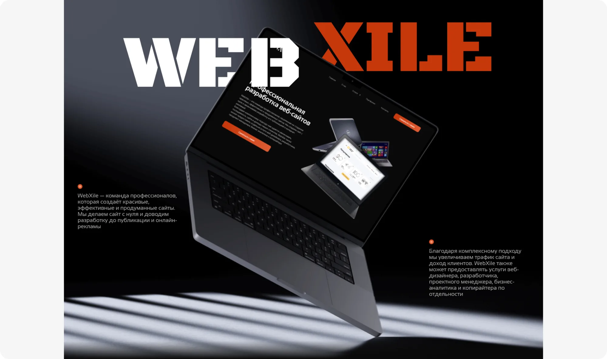
- Роль
- UX/UI-дизайнер
- Компания
- WebXile, дизайн-студия
- Платформы
- Web: десктоп, планшет, мобильные
- Срок
- 2 недели
- Мой вклад
- Исследование, структура, вайрфреймы, UI, адаптив, UI-kit
Коротко о кейсе
WebXile - команда, которая создаёт красивые, эффективные и продуманные сайты с нуля. Студии нужен был сайт-портфолио, который сам продаёт её услуги: с понятной структурой, живыми проектами и коротким путём до консультации с менеджером.
01 · О проекте
Проблема и решение
Рынок создателей сайтов переполнен, поэтому сайт самой студии должен убеждать с первых секунд.
О проекте
Сайт-портфолио команды профессионалов, нацеленной на создание красивых, эффективных и продуманных сайтов. Чистая вёрстка без конструкторов. Создание сайта с нуля и доработка, а также публикация и онлайн-реклама.
Проблема
Высокая конкуренция. Многие боятся сделать следующий шаг в развитии бизнеса - создать собственный сайт. Начинающие студии часто не могут найти клиентов из-за некачественного сайта-портфолио, который не просто непривлекателен, но и отпугивает потенциальных клиентов своей сложностью.
Решение
Приятный внешний вид и грамотная структура помогают клиенту сразу получить ответы на все интересующие вопросы, побуждают к первой консультации с менеджером, а затем и к заказу проекта.
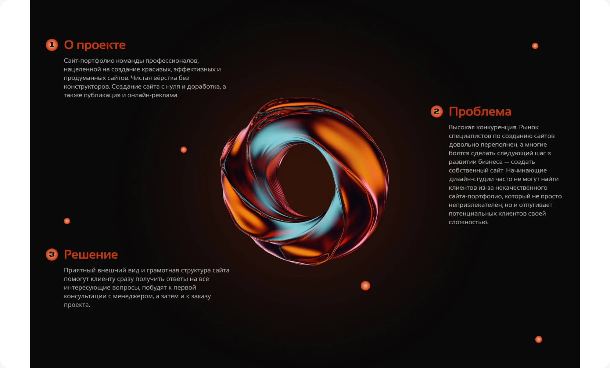
02 · Процесс
Четыре этапа от исследования до UI
Шли от понимания клиента к структуре, затем к вайрфреймам и визуальному дизайну.
25% пути
Исследование
- Маркетинговое исследование
- Исследование пользователей
- Определение проблемы
50% пути
Сценарии
- Генерация идей
- Продуктовая гипотеза
- JTBD и user flow
75% пути
Вайрфреймы
- Style guide
- Hi-Fi вайрфреймы
100% пути
UI-дизайн
- Интерфейс
- Адаптивный дизайн
03 · Персоны и job stories
Двое клиентов, одна цель: свой сайт
Владелец магазина выходит в онлайн, SMM-менеджер хочет сайт-визитку. Обоим важно понять, чему можно доверять.
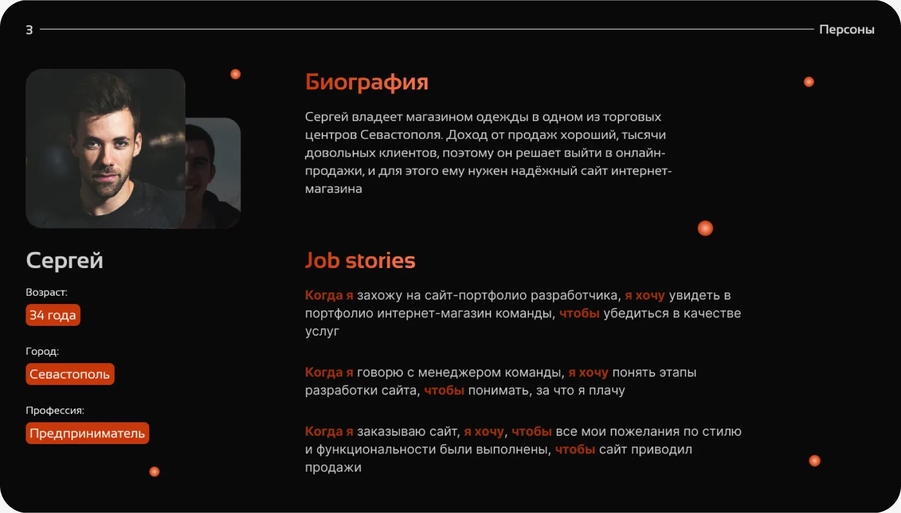
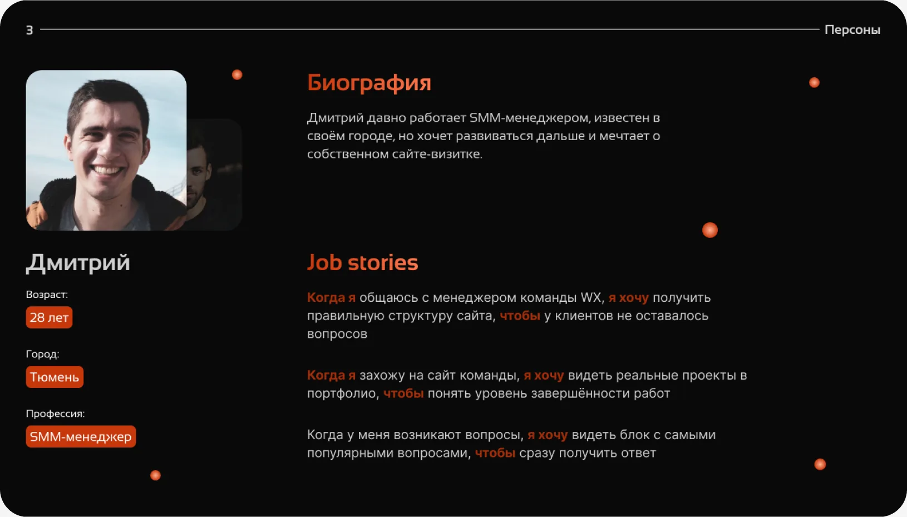
Что нужно клиенту
- Увидеть в портфолио реальные проекты, включая интернет-магазин, чтобы оценить качество
- Понять этапы разработки сайта и за что он платит
- Получить правильную структуру сайта, чтобы у его клиентов не оставалось вопросов
- Найти ответы на частые вопросы без звонка менеджеру
- Получить сайт в нужном стиле и с нужной функциональностью, который приводит продажи
04 · Информационная архитектура
Главная - центр, всё остальное в два клика
Структура строилась вокруг вопросов клиента: что вы делаете, покажите работы, сколько и как, как с вами связаться.
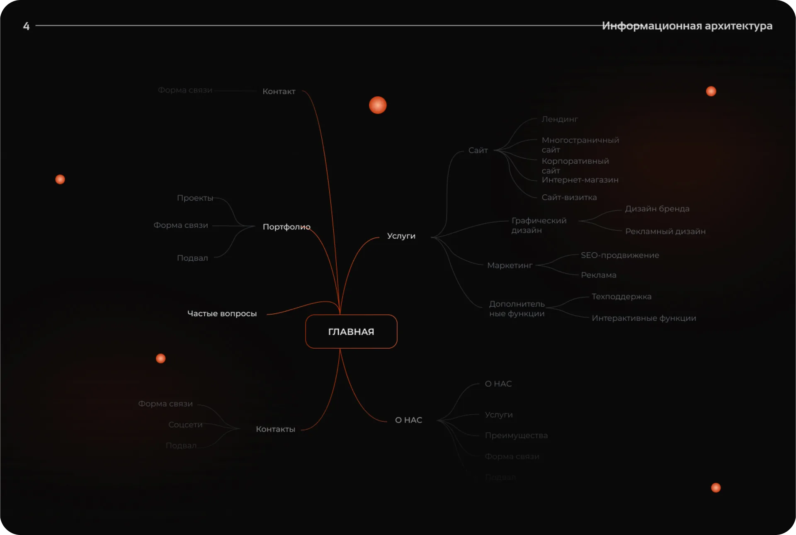
Главная
Ведёт к услугам, портфолио, контактам и странице «О нас». Частые вопросы вынесены отдельным блоком, чтобы снять сомнения до обращения.
Услуги
Сайт (лендинг, многостраничный, корпоративный, интернет-магазин, сайт-визитка), графический дизайн, маркетинг и дополнительные функции.
Связь
Форма обратной связи доступна из портфолио, контактов и страницы «О нас», поэтому путь до заявки всегда короткий.
Ключевые решения
Услуги сгруппированы по задачам клиента, а не по внутренней кухне студии. Портфолио связано с проектами и формой связи.
05 · Пользовательские сценарии
Три пути до заявки
Из job stories выделили три главных пути: оценить качество по портфолио, понять этапы работы и заказать сайт.
06 · Вайрфреймы
От схемы к Hi-Fi
Сначала проверили логику блоков на простых схемах, затем собрали Hi-Fi вайрфреймы, в которых сайт уже читается как готовый.
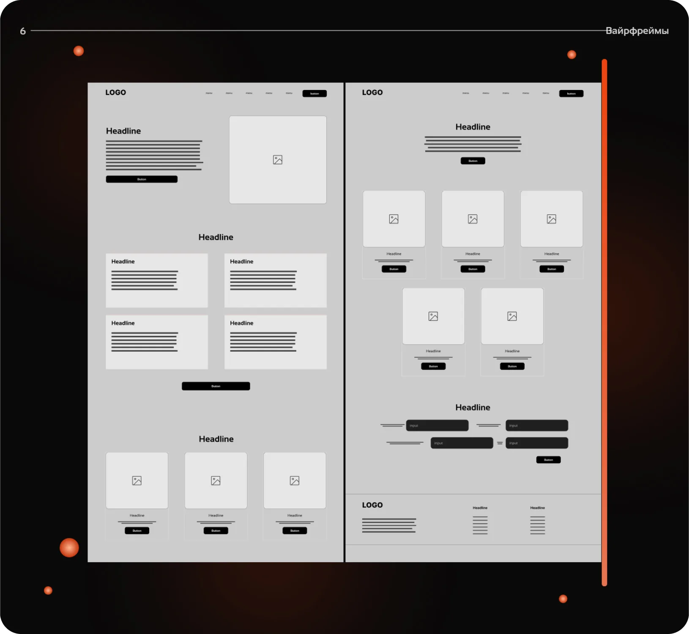
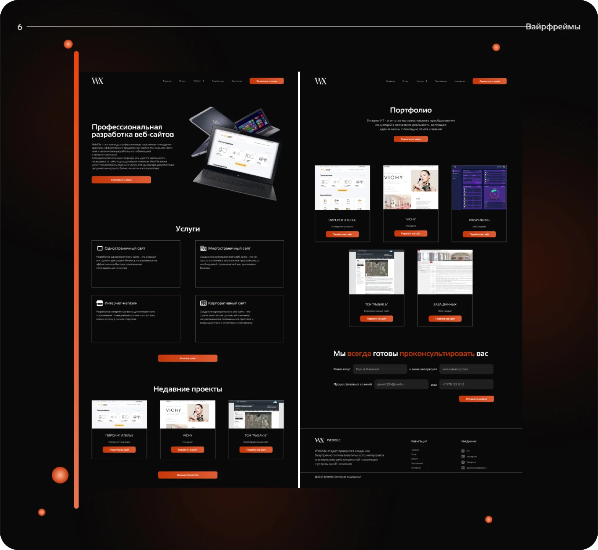
07 · Визуальный дизайн
Главная и «О нас» на ноутбуке и планшете
Тёмная тема с оранжевым акцентом выделяет призывы к действию и делает страницу собранной.
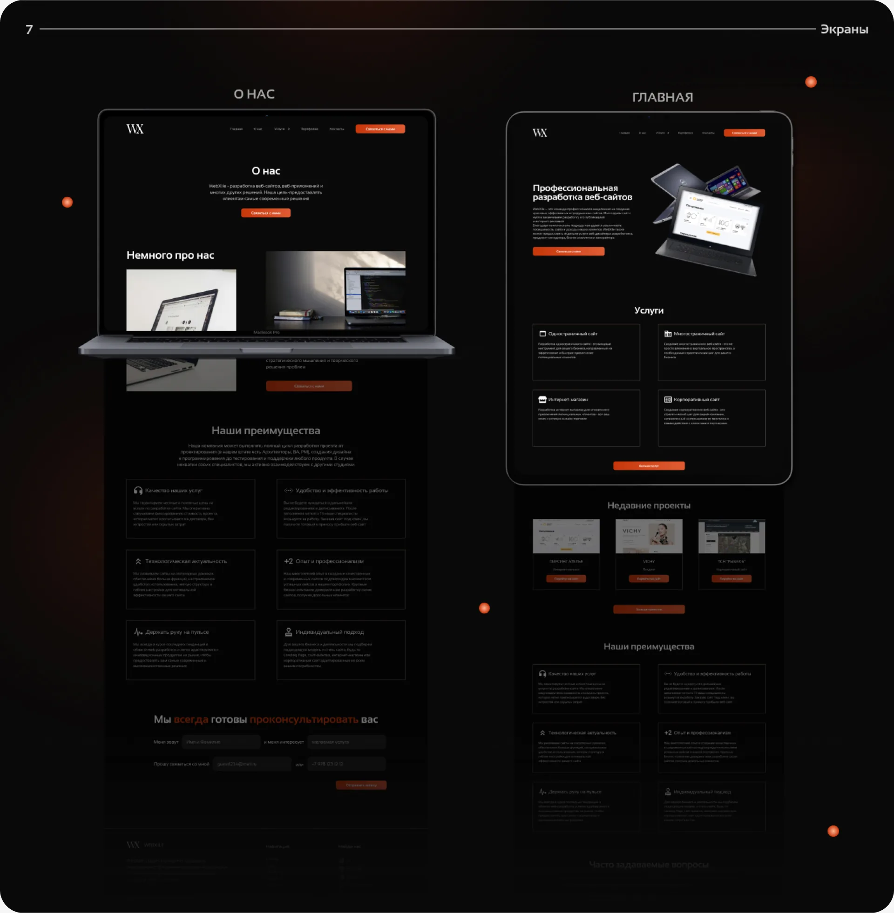
Главная
Сразу объясняет, чем занимается студия: заголовок, ключевые услуги, недавние проекты и преимущества.
О нас
Короткий рассказ о команде, блок преимуществ и форма консультации в конце страницы.
Адаптив
Тот же сайт на ноутбуке и планшете: сетки блоков перестраиваются без потери смысла.
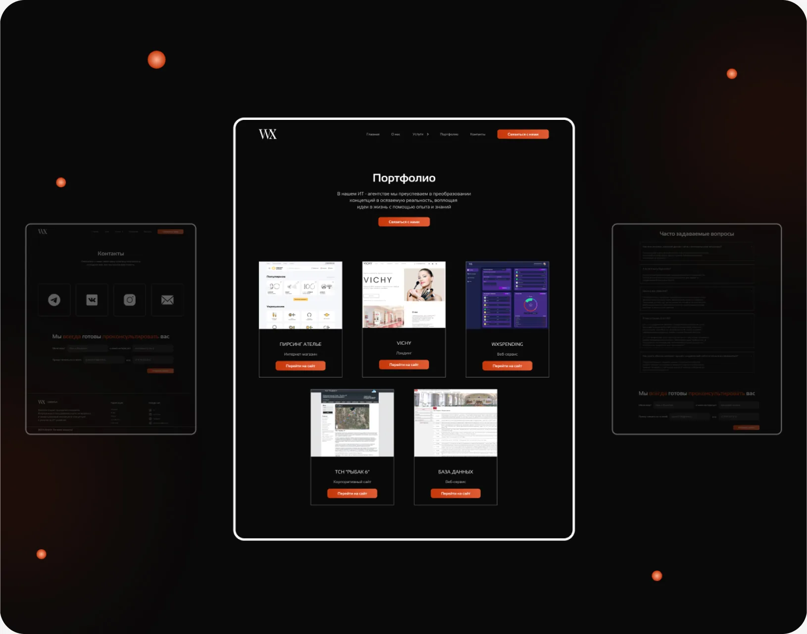
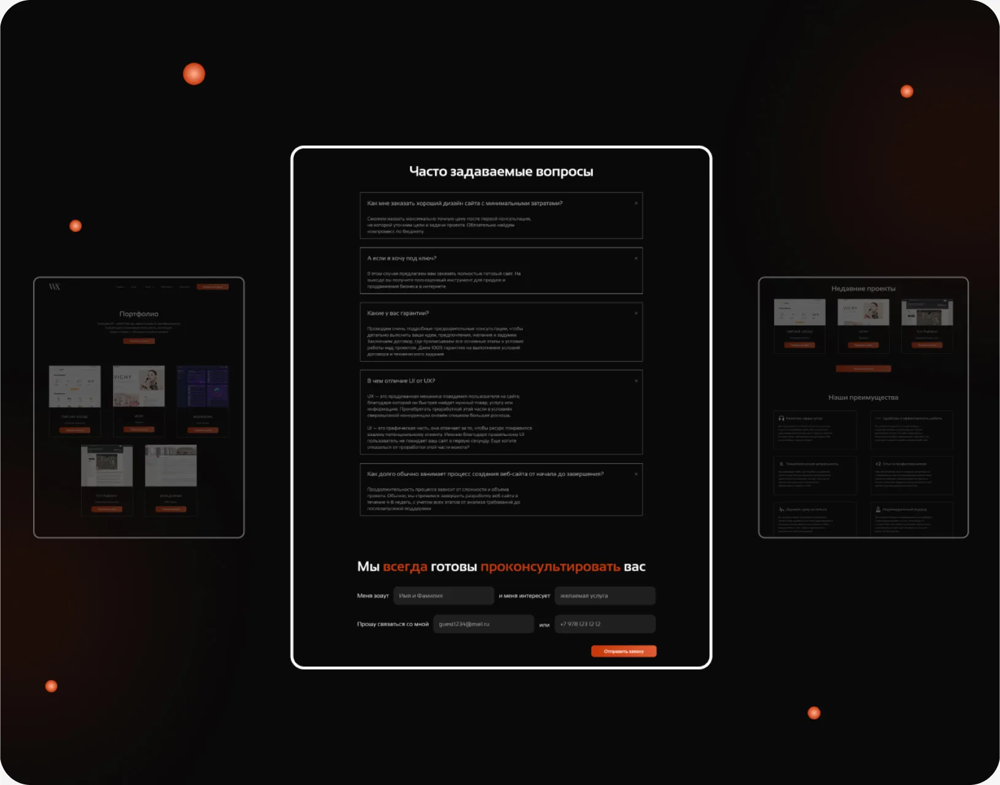
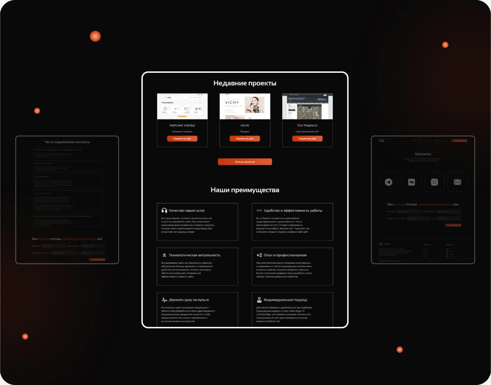
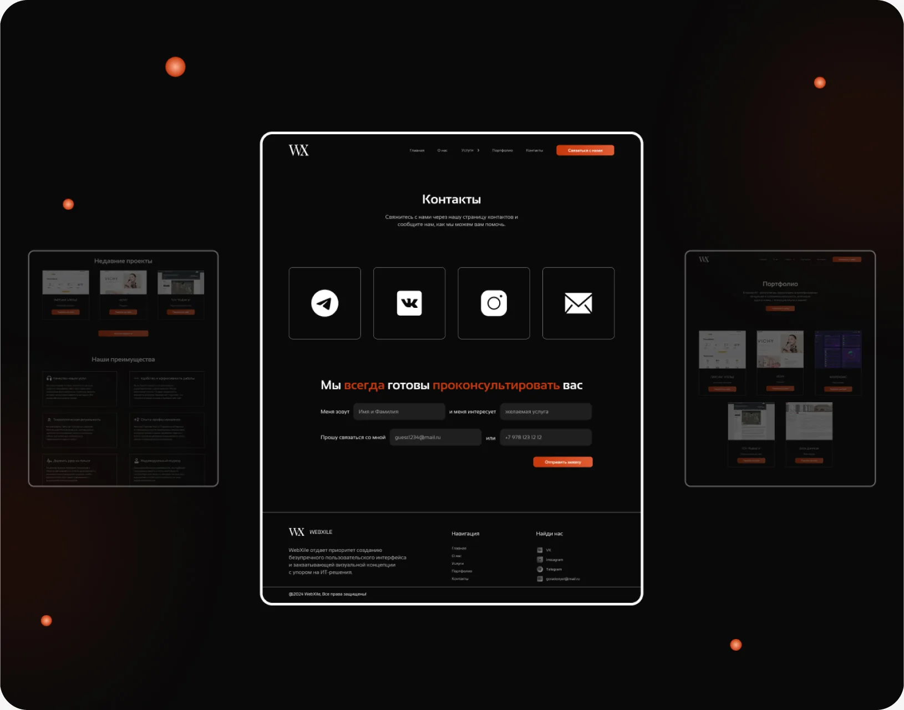
08 · Типографика, цвет и UI-kit
Чёрный, оранжевый и один шрифт
Контрастная палитра и один гротеск в двух начертаниях держат сайт цельным.
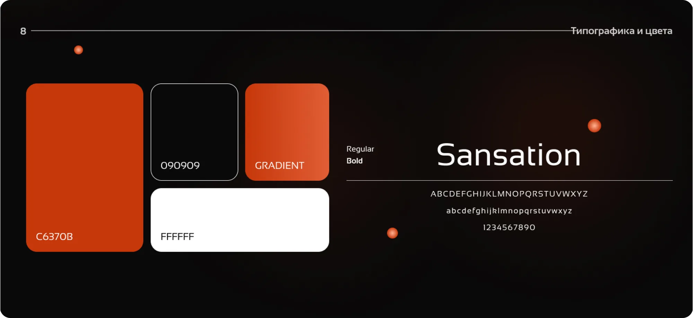
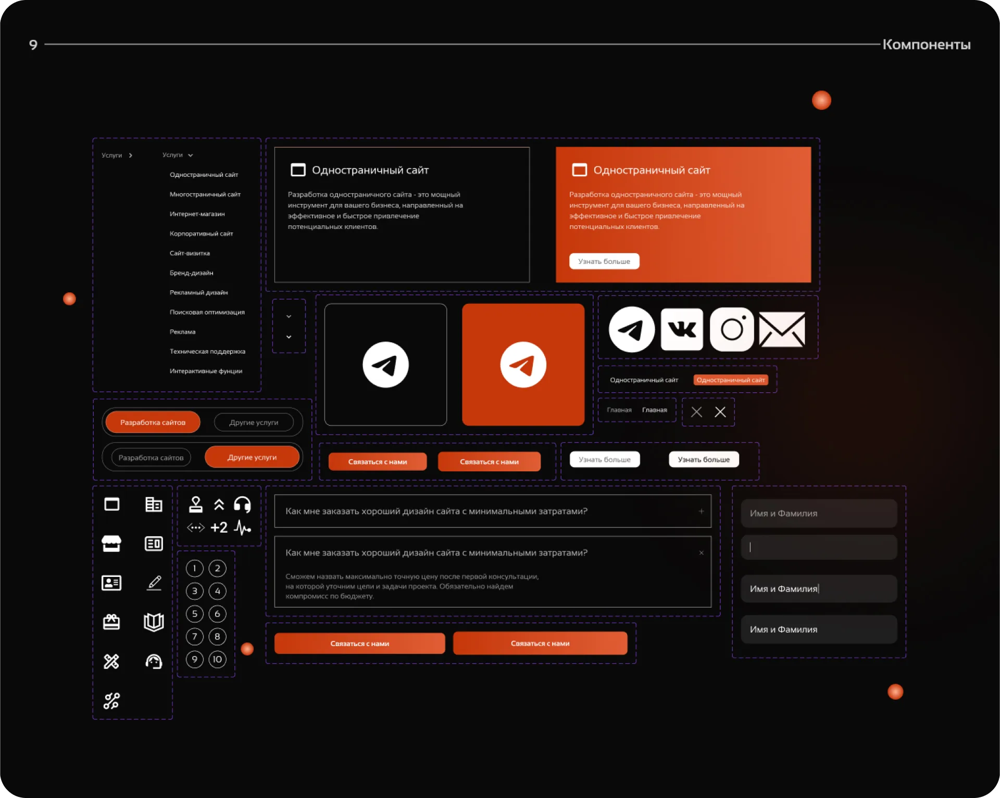
Типографика
Sansation в двух начертаниях: Regular и Bold. Заголовки и акценты хорошо читаются на тёмном фоне.
Цвет
Оранжевый #C6370B, чёрный #090909, белый #FFFFFF и оранжевый градиент для кнопок и карточек в фокусе.
Компоненты
Выпадающее меню услуг, карточки услуг, кнопки, иконки соцсетей, аккордеон частых вопросов и поля формы.
09 · Итог
Что получилось
Продукт
Сайт-портфолио студии: показывает проекты, объясняет услуги и ведёт клиента к консультации с менеджером.
Дизайн-работа
Исследование, персоны и JTBD, информационная архитектура, сценарии, вайрфреймы lo-fi и Hi-Fi, UI, адаптив и UI-kit.
Что дальше
Запуск, сбор аналитики и проверка, как структура влияет на долю посетителей, дошедших до заявки.
Другие проекты
Можете ознакомиться с моими другими проектами


Блок для связи.
Поработаем вместе?
Напишите мне в телеграм
- Email:
- mountdsgn@mail.ru
- Phone
- +7 (918) 321-26-35